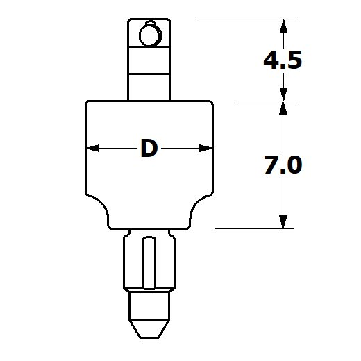
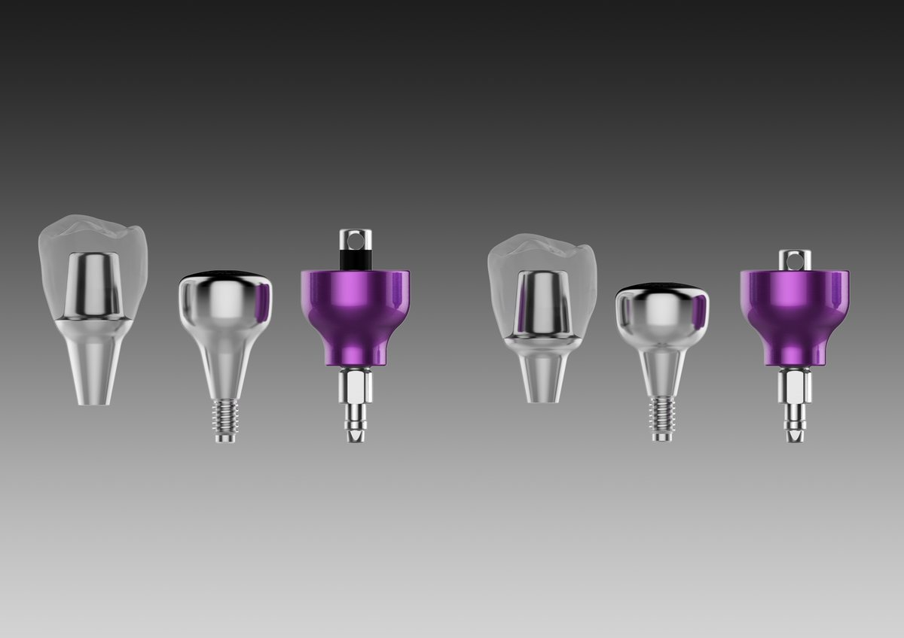
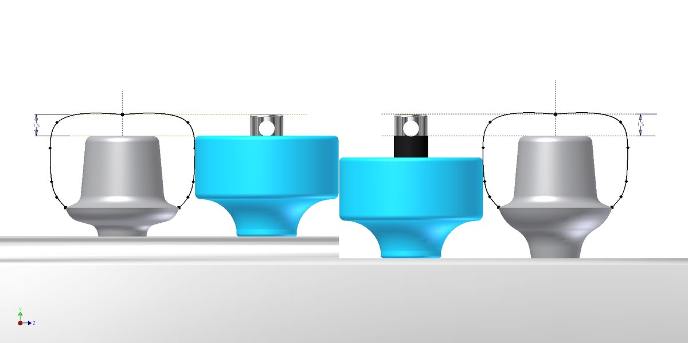

핀 하나로
높이를 가늠합니다.
드릴링한 자리에 같은 색 핀을 꽂으면 대합치까지의 공간과 최종 어벗이 들어갈 높이를 눈으로 볼 수 있습니다. 눈금 읽는 법과 치수를 정리했습니다.

드릴링한 자리에
핀을 꽂아 봅니다.
SurgicalPin은 기존 CheckPin에 InitialPin 역할을 더한 핀입니다. 드릴링한 자리에 Cup과 같은 색 · 같은 직경의 핀을 꽂으면, 그 자리에 올라갈 보철을 가상의 치아처럼 볼 수 있습니다.
상하악 수직 공간과 인접치와의 수평 위치를 눈으로 확인하고, 식립 후에는 내부에 꽂아 패스와 교합 높이를 다시 봅니다.
눈금 3칸,
직경 5종.
4.5mm와
7.0mm.
핀 상단 눈금부는 4.5mm(1.5mm × 3칸), 몸체는 7.0mm입니다. D는 직경으로, Cup과 같은 6–10을 씁니다.
눈금은 육안 확인용입니다. 길이를 재는 측정 기구가 아닙니다.

식립 전에 한 번,
식립 후에 한 번.
핀과 어벗,
같은 숫자.


SurgicalPin,
자주 묻는 질문.
SurgicalPin은 어디에 들어 있나요?
Surgical Kit에 직경별로 5개가 들어 있습니다. 구성은 Surgical Kit 안내 페이지에서 확인하십시오.
눈금으로 길이를 잴 수 있나요?
눈금은 수직 공간을 눈으로 확인하는 용도입니다. 길이를 재는 측정 기구가 아닙니다.
색은 무엇을 뜻하나요?
직경입니다. 6 노랑, 7 초록, 8 보라, 9 파랑, 10 하늘이며, 제품의 실직경이 아니라 최종 보철의 근원심경을 뜻합니다.

이어서 읽어 보세요.

임플란트 드릴링, 근원심 크기 Cup으로 시작하는 심플웨이 | 어벗츠
심플웨이는 최종 보철의 근원심 크기에 맞춘 Cup을 Pen에 끼워 첫 드릴링을 합니다. 3D 모형으로 보는 시작 순서와 Pen 사용법, 사용 조건을 정리했습니다.

치과 기공 의뢰, 전화 대신 화면으로 확인하는 법 | 치과·기공소 어벗츠
치과에서 치과기공소로 보내는 기공 의뢰와 커스텀 어벗먼트 제작 의뢰를 abuts.fit 화면으로 등록하고, 준비·가공·출고·완료 단계와 송장까지 확인하는 방법을 이야기로 정리했습니다.

치과의사가 직접 만든 치과·기공소 의뢰 플랫폼, 어벗츠 이야기
치과의사이자 개발자인 이준호 원장이 진료실의 불편에서 출발해 만든 치과·치과기공소 제작 의뢰 플랫폼 어벗츠(abuts.fit). 제품과 플랫폼이 동료 치과로 이어지기까지의 이야기.